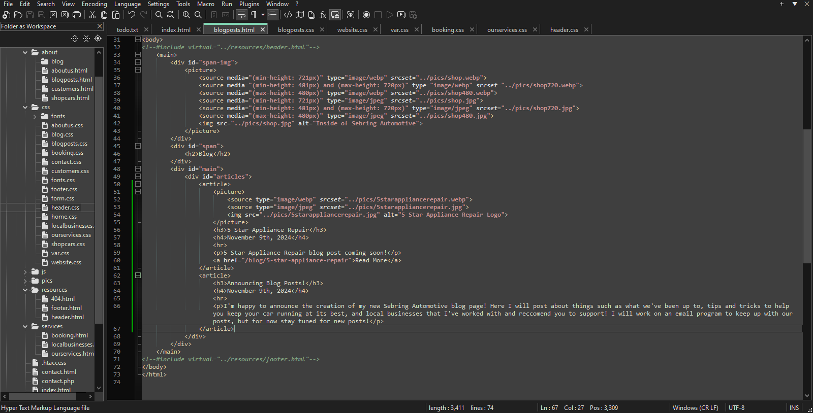

Announcing Blog Posts

I'm happy to announce the all new Sebring Automotive Blog. I was inspired by my friend Anatoliy's Blog page for his business 5 Star Appliance Repair, LLC where he educates his customers about their appliances and the work he does. I found this an amazing idea as I love sharing all the fascinating things I learn in my career, as well as tips and tricks you can use on your own car to keep it at its best. Also outside of my local customers, I'd like this to be a good online resource where I can post some of the trickier diagnoses and problems I've had to do, to hopefully help others doing the same job.
You'll also see me occasionally post updates about the business, and what we've been up to with our project cars, one of which is hopefully going to be a rally-spec AW11 MR2 designed for ARA racing. Although nothing is solid yet on that, if we get to racing it youll see updates on that posted here. We also may post select customer cars that we've done extensive restoration or modification work to, with a description of whats been done. I'd also like to work on comments so you can interact with the posts we make, and even sooner than that we will have an email list on the blog post page where you can sign up for updates, although it may be a little while before I get to it
Again circling back to Anatoliy, I'll also be posting local business reccommendations of people who I've worked with and know, Anatoliy will be first but I've got some great local businesses that I look forward to working with and posting about. These people do amazing work and deserve your business and support, anyone using a big company should strongly consider the local options I'll be reccommending!